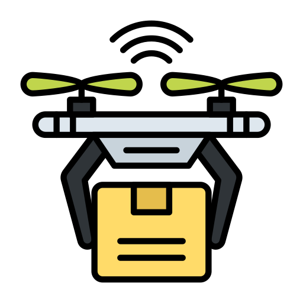
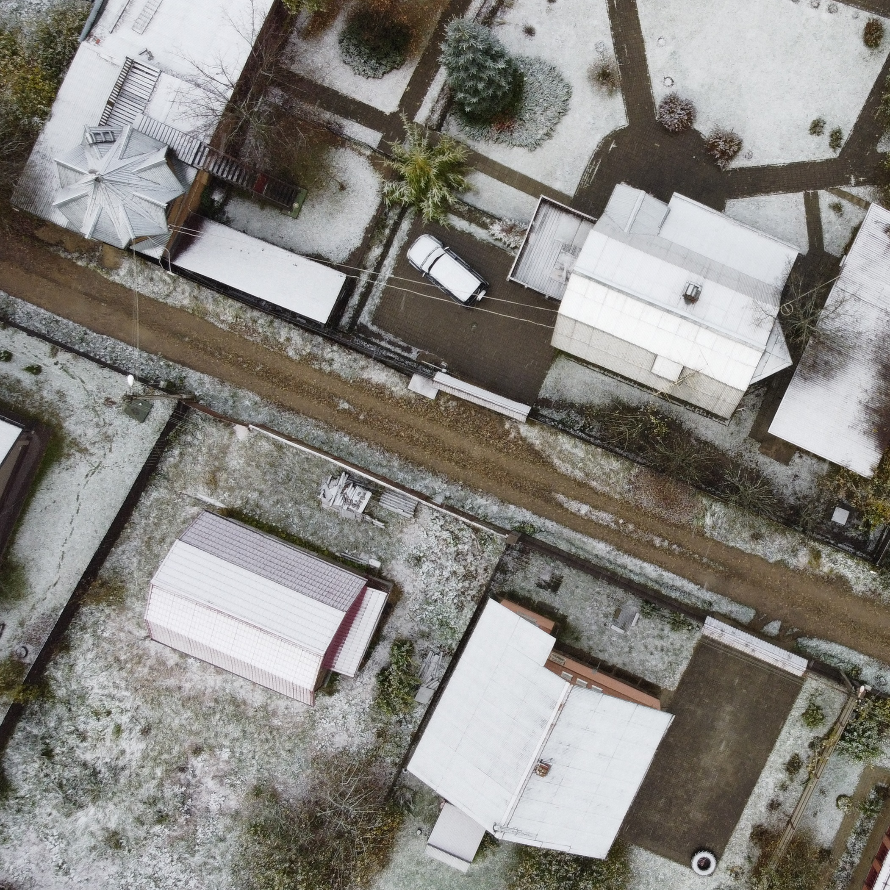
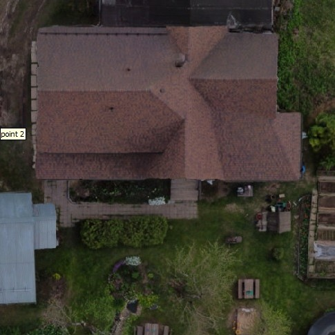
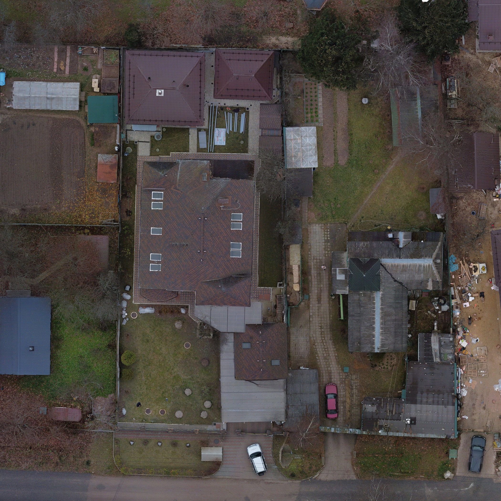
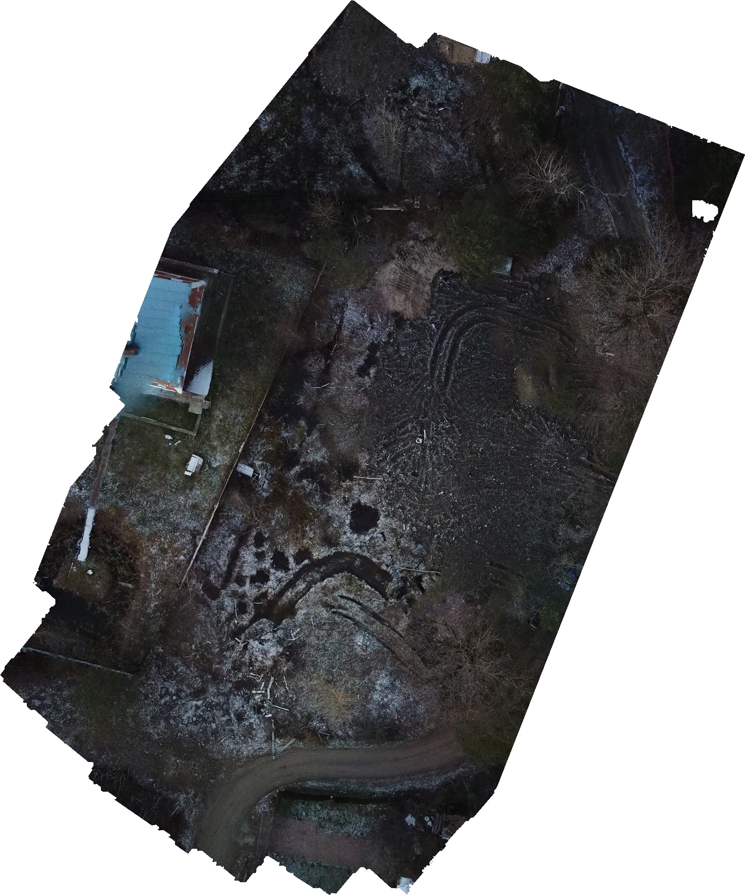
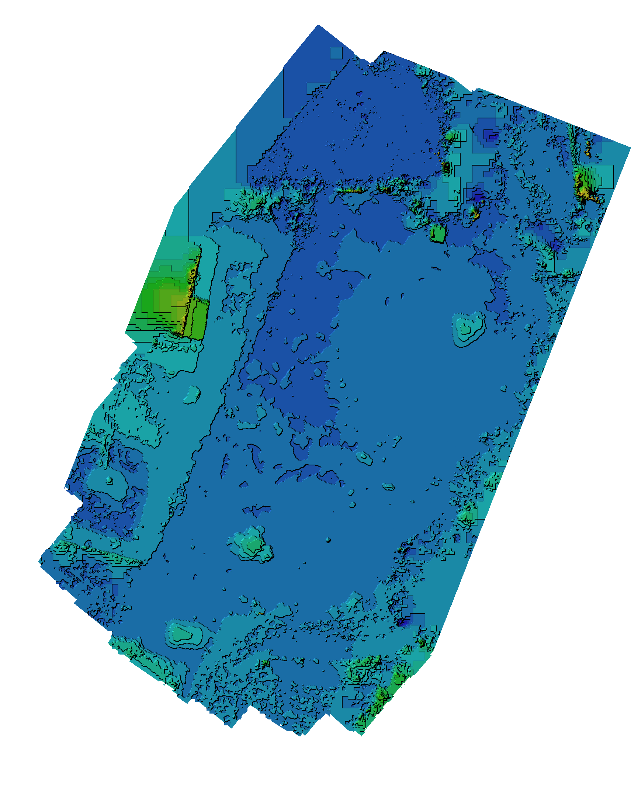
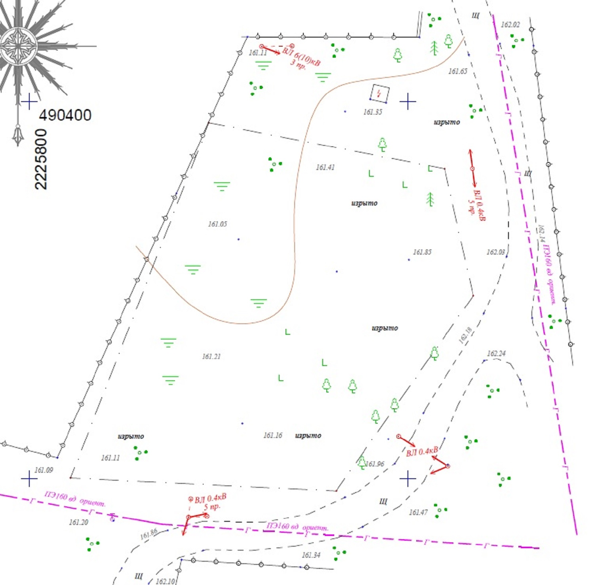

<!DOCTYPE html>
<html xmlns:og="http://ogp.me/ns#"
xmlns:fb="http://ogp.me/ns/fb#"
meta property="og:type" content="website"/
meta property="og:url" content="Geoplaning_SRSWEB_itog_2.html"
meta property="og:title" content="Аэрофотосъемка для Вас" 
meta property="og:description" content="Немного об аэрофотосъемке"/>

<head>
  <meta charset="utf-8">
  <META name=‘Description’ content= ‘Аэрофотосъемка - не дорого - для Ваших нужд.’>
  <title>Аэрофотосъемка</title>
  <link rel="preconnect" href="https://fonts.googleapis.com">
  <link rel="preconnect" href="https://fonts.gstatic.com" crossorigin>
  <link href="https://fonts.googleapis.com/css2?family=Montserrat:wght@100&family=Ubuntu:wght@300&display=swap" rel="stylesheet">
  <link rel="stylesheet" href="css/bootstrap.css">
  <link rel="stylesheet" type="text/css" href="css/styles.css">

  <script defer src="https://use.fontawesome.com/releases/v5.8.0/js/all.js"></script>

  <script src="https://cdn.jsdelivr.net/npm/jquery@3.5.1/dist/jquery.slim.min.js" integrity="sha384-DfXdz2htPH0lsSSs5nCTpuj/zy4C+OGpamoFVy38MVBnE+IbbVYUew+OrCXaRkfj" crossorigin="anonymous"></script>
  <script src="https://cdn.jsdelivr.net/npm/bootstrap@4.6.1/dist/js/bootstrap.bundle.min.js" integrity="sha384-fQybjgWLrvvRgtW6bFlB7jaZrFsaBXjsOMm/tB9LTS58ONXgqbR9W8oWht/amnpF" crossorigin="anonymous"></script>
  
</head>

<body>
  <div class="top-container">
    
    
    <h2 class="h2-2-1">Рассмотрим подробнее назначение видов съемки</h2>
    

    <aside class="rightSide">
      
      <ul class="menu">        
        <li><a href="index.html">Главная</a></li>
        <li><a class="formenu" href="#">Подробнее</a></li>        
        <li><a href="Geoplaning_SRSWEB_itog_3.html">Контакты</a></li>
      </ul>
    </aside>
  </div>
  <div class="middle-container">

    <table>
      <tr>
        <td>
          
        </td>
        <td colspan="2">
          <h3 class="h3_table">Простой снимок</h3>
          <p class="p-table">Для простых повседневных задач, когда не требуется инженерное применение, достаточно простого снимка - основное отличие от ортофотоплана, это чем ближе к краю снимка, тем заметнее те плоскости объектов, которые перпендикулярно земле.</p>
        </td>
        <td></td>
      </tr>
      <tr>
        <td>
          
        </td>
        <td colspan="2">
          <h3 class="h3_table">Ортофотоплан не большого участка</h3>
          <p class="p-table">Когда нужны точные параметры без искажений, расчитать площадь для закупки материала кровли и т.п., необходим ортофотоплан - сшитые камерально фотографии, имеющие в своих параметрах координатную привязку, и образующие плотное перекрытие с друг другом. Как можно видеть на этом примере - в любой точке и у любого объекта изображения мы имеем ортонаправелнный перпендикуляр к земле.</p>
        </td>
        <td></td>
      </tr>
      <tr>
        <td>
          
        </td>
        <td colspan="2">
          <h3 class="h3_table">Ортофотоплан на большую площадь</h3>
          <p class="p-table">Тоже самое, что и предыдущий пример, но с гораздо большим охватом, требующим более длительного времени полета, большее кол-во фотографий, и может применяться как вспомогательный материал для многих задач - от экспертиз до кадастра.</p>
        </td>
        <td></td>
      </tr>
      <tr>
        <td>
          
        </td>
        <td colspan="2">
          <h3 class="h3_table">Ортофотоплан застраиваемого участка</h3>
          <p class="p-table">Когда планируется стройка и нужно подготовиться к земельным и другим работам по очистке и подготовке к строительству участка, выполняется данный вид работ.</p>
        </td>
        <td></td>
      </tr>
      <tr>
        <td>
          
        </td>
        <td colspan="1">
          <h3 class="h3_table">Карта высот и Топографический план</h3>
          <p class="p-table">Как видно по находящемуся выше предыдущему примеру, он служит  так же и основой для формирования карты высот. Она очень полезна при выравнивании рельефа участка или для других подобных задач - просто дайте ее бульдозеристу и он превратит болото с холмами в футбольное поле. При подготовке к ее построению требуется особо тщательный полет с высоким процентом перекрытия снимков.<br>И немного выбивающийся из общего ряда в прямом и переносном смысле - пример топографической съемки, при обработке которой использовались материалы аэрофотосъемки.</p>
        </td>
        <td>
          
        </td>
      </tr>
    </table>   
    
  </div>


  <div class="bottom-container">    
    <i class="icon fab fa-whatsapp fa-4x"></i>     
    <p style="display: inline-block;">geoplaning@yandex.ru<br>+7(926)-751-24-88<br>geoplaning@mail.ru</p>
    <i class="icon fab fa-telegram fa-4x"></i>
    <p class="rights">© 2021 Geoplaning</p>
  </div>


</body>

</html>
